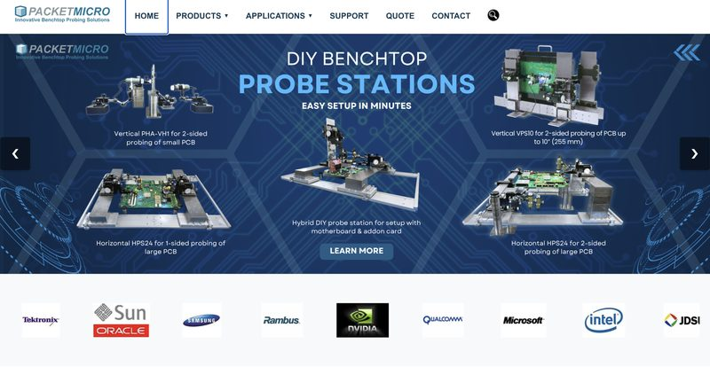

Website Rebuild
Packet Micro, Santa Clara · to , with new pages added in summer
I rebuilt Packet Micro's company website from the ground up so it works well on phones, is easier for search engines to find, and is easier for the next developer to maintain, without breaking any of the old links.
My Role
I was the intern responsible for the rebuild. I wrote the new front end, reorganized it into reusable components, restyled the pages, and set up the routing and redirects for the old URLs.
Problem
The old site was hard to use on a phone and was not set up well for search engines. Its code also repeated a lot of the same markup across pages, so even a small change meant editing many files.
Approach
- Rebuild on React and Next.js. Next.js gave each page its own route and made it straightforward to serve pages that search engines can read.
- Break the front end into components. Repeated pieces like the header, footer and shared page sections became shared components, so a change happens in one place.
- Restructure the CSS. I reorganized the styles around those components so the pages look consistent and adapt to small screens.
- Keep old links alive. I added routing rules and redirects so every legacy URL, including ones bookmarked by customers or linked from other sites, still lands on the right page.
I used AI-assisted development with Cursor during the build, which sped up the repetitive parts. I still reviewed and tested everything it produced, since I was the one responsible for the site working.

Result
The new site shipped and is live at packetmicro.com. It works on phones, is better optimized for search, and is built from components that are much easier to update. Old URLs still work, so nobody following an old link hits a dead page.
Back in 2026
When I returned in summer 2026, I added new pages to the site to reflect changes in Packet Micro's products. Because the site was already built from shared components, new pages could reuse the same header, footer and layout instead of starting from scratch.
What I learned
A redesign is also a migration. The part users never see, making sure the old URLs keep working, mattered as much as the new pages did.